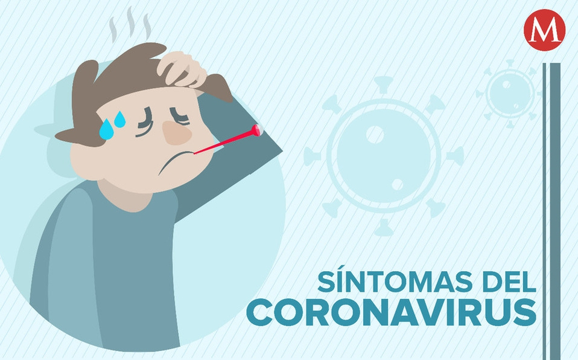
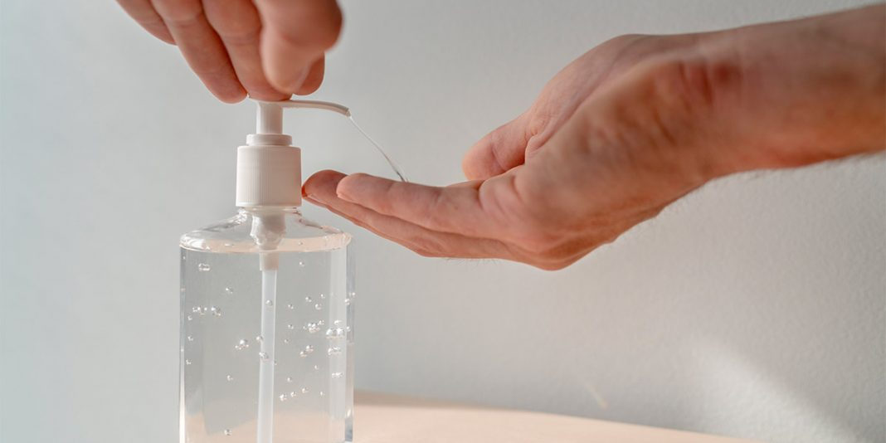

Informacion
Los coronavirus (CoV) son una gran familia de virus que causan enfermedades que van desde el resfriado común hasta enfermedades más graves, como ocurre con el coronavirus causante del síndrome respiratorio de Oriente Medio (MERS-CoV) y el que ocasiona el síndrome respiratorio agudo severo (SRAS-CoV).
Covid-19
Un nuevo coronavirus es una nueva cepa de coronavirus que no se había encontrado antes en el ser humano. Los primeros casos de neumonía se comunicaron a la OMS en Wuhan, una ciudad situada en la provincia china de Hubei, el 31 de diciembre de 2019.
El virus parece trasmitirse fácilmente entre las personas, y, con el paso del tiempo, se continúa descubriendo más sobre cómo se propaga. Los datos muestran que se contagia de persona a persona entre aquellos que están en contacto cercano (dentro de aproximadamente 6 pies, o 2 metros). El virus se trasmite por gotitas respiratorias que se liberan cuando alguien que lo tiene tose, estornuda o habla. Una persona que está cerca puede inhalar estas gotitas, o las gotas pueden caerle en la boca o la nariz.
También puede propagarse cuando una persona toca una superficie donde se encuentra el virus y luego se toca la boca, la nariz, o los ojos, aunque no se considere que esta sea una de las principales maneras en que se trasmite.
Sintomas del virus Covid-19
Los signos y síntomas de la enfermedad del coronavirus 2019 (COVID-19) pueden aparecer entre dos y 14 días después de la exposición al virus. Este período entre la exposición y la aparición de los síntomas se llama el período de incubación.
Los signos y los síntomas comunes pueden incluir:
- Fiebre
- Tos
- Cansancio
Los primeros síntomas de la COVID-19pueden incluir pérdida del sentido del gusto o del olfato.
Otros síntomas pueden incluir:
- Falta de aire o dificultad para respirar
- Dolores en los músculos
- Escalofríos
- Dolor de garganta
- Goteo de la nariz
- Dolor de cabeza
- Dolor en el pecho

Cuándo consultar al médico
Si tienes la COVID-19 o has estado en contacto con alguien a quien diagnosticaron con la COVID-19, ponte en contacto de inmediato con tu médico o clínica para que te aconsejen. Antes de ir a la cita habla con tu equipo de atención médica sobre tus síntomas y posible exposición al virus.
Si tienes signos y síntomas de la COVID-19 que indican una emergencia, busca atención médica de inmediato. Los signos y los síntomas que indican una emergencia pueden incluir:
- Problemas para respirar
- Dolor u opresión persistente en el pecho
- Incapacidad de permanecer despierto
- Confusión que es nueva
- Labios o cara de color azulado
Todo lo que debe saber sobre el gel antibacterial para su protección
Un gel antibacterial, de base alcohólica, (el etanol es el único aprobado para usar sobre la piel humana) es efectivo para matar hongos, bacterias y virus, incluido el coronavirus, cuando tiene una concentración entre el 62% y el 69,99%. Los que se acercan más al 70% los eliminan en el lapso de un minuto, los que bordean el 62% pueden tardarse en eliminarlos entre 5 y 10 minutos.
La efectividad del gel antibacterial, con la concentración adecuada de etanol, sirve para eliminar el virus en superficies inanimadas o productos que uno trae de la calle, pero el tiempo que demora en hacerlo es más largo (entre cinco a diez minutos). Por eso es mejor aplicar alcohol antiséptico al 70%.

Distanciamiento Social
¿Por qué practicar el distanciamiento social?
El COVID-19 se propaga principalmente entre personas que están en contacto cercano (dentro de 6 pies aproximadamente) por un período prolongado. La propagación ocurre cuando una persona infectada tose, estornuda o habla, y las gotitas de su boca o nariz se expulsan al aire y terminan en la boca o nariz de las personas cercanas. Estas gotitas también pueden inhalarse y entrar en los pulmones. Estudios recientes indican que las personas que están infectadas pero no tienen síntomas probablemente también juegan un rol en la propagación del COVID-19.
Como las personas pueden propagar el virus antes de saber que están enfermas, es importante mantener una distancia de al menos 6 pies de otras personas siempre que sea posible, incluso si usted o esas personas no tienen síntomas. El distanciamiento social es especialmente importante para las personas con mayor riesgo de enfermarse gravemente a causa del COVID-19.